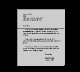

Weitere Datenübertragung Ihres Webseitenbesuchs an Google durch ein Opt-Out-Cookie stoppen - Klick!
Stop transferring your visit data to Google by a Opt-Out-Cookie - click!: Stop Google Analytics
Cookie Info. Datenschutzerklärung

 Konrad Fischers Altbau und Denkmalpflege Informationen - Startseite mit Impressum
Konrad Fischers Altbau und Denkmalpflege Informationen - Startseite mit Impressum
Inhaltsverzeichnis - Sitemap - über 1.500 Druckseiten unabhängige Bauinformationen
Die härtesten Bücher gegen den Klimabetrug - Kurz + deftig rezensiert +++
Bau- und Fachwerkbücher - Knapp + (teils) kritisch rezensiert
EnEV-Befreiung gem. § 17 / 24! +++
Fragen? +++ Alles auf CD
27.10.06: DER SPIEGEL: Energiepass: Zu Tode gedämmte Häuser
Kostengünstiges Instandsetzen von Burgen, Schlössern, Herrenhäusern, Villen - Ratgeber zu Kauf, Finanzierung, Planung (PDF eBook)
Altbauten kostengünstig sanieren -
Heiße Tipps gegen Sanierpfusch im bestimmt frechsten Baubuch aller Zeiten (PDF eBook + Druckversion)

Weitere Beratung und Information zu Denkmalpflege, Altbau usw. 16
Hinweis: Der Betreiber dieser Website haftet nicht für Rechtsverstöße auf Seiten, auf die sich
externe Links beziehen. Uncle Spam needs you: Tote Links bitte melden!
Webseite in Unterkapitel aufgeteilt:
1. Zum Einstieg 2. Denkmalämter und verwandte Institutionen 3. Denkmalpflege,
Altbau und Stadtentwicklung
4. Translozierung / Relocation von Baudenkmalen 5. Diverse Denkmal- und
Museumslinks deutsch und international
6. Aufsätze und Vorträge zu Problemen der Denkmalpflege 7.
Restauratoreninfo
8. Internationale Denkmal- und Restaurierungslinks 9. Altbauarchitekten / -handwerker
10. Bauwesen allgemein / Ausschreibungsinfo / DIY-Info 1
11. 2
12. Recht und Steuer / Verbraucherschutz
13. Versicherungen
14. Mieten/Vermieten/Immobilien/Baudenkmal/Schloß/Castle
kaufen/Bauen auf dem Lande - Landwirtschaftsinfo Ausgewählte Umweltlinks
16. Weitere Informationen/Medien/Suchmaschinen/Gesundheit/Links
zu schönen/frechen Seiten 17. PS. Tips für Internet-Anfänger
16. Weitere Informationen/Medien/Suchmaschinen/Gesundheit/Links zu schönen/frechen Seiten
Informationen gelöscht, da sie dem Googlebot nicht gefallen haben. Benützen sie also nur und ausschließlich den
Googlehupf, wenn Sie was im Netz suchen. Oder Suchmaschinen, in denen die Zensur noch nicht so stark ausgebrochen ist.
Und hier ist eine Seite, auf der man sich mit seiner Webseite eintragen kann, um gegebenenfalls besser gefunden zu werden: 
Altbau und Denkmalpflege Informationen Startseite
Bauanfragen - Internetfragestunde
Energiesparseite
Anregungen, (keine Schnorreranfragen!), Ergänzungsvorschläge?